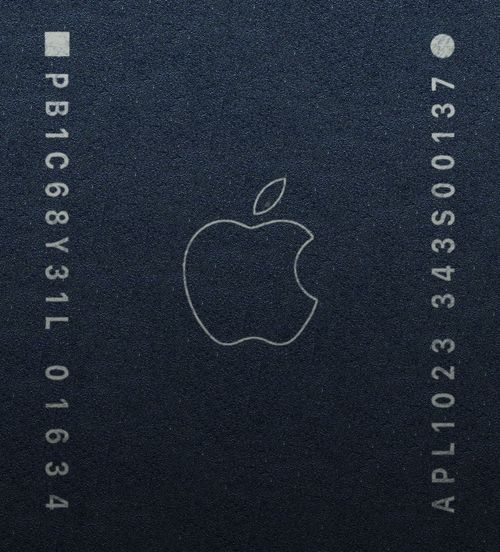
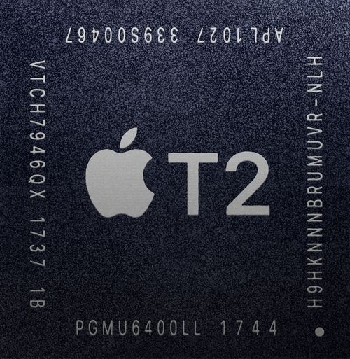

Apple T series
Apple Silicon T series는 주로 Intel Mac에서 주 프로세서와 독립적으로 배치되어 보안 기능과 같은 보조 프로세싱을 담당하는 칩이다. Mac 라인업이 Apple Silicon체제로 이주함에 따라, 존재의 필요성이 없어졌다. Apple Silicon Mac에서 제공하는 보안기능인
'Secure Enclave'와 하드웨어 HEVC인코딩 기능 등은
Apple Silicon내의 각각의 전용 보조프로세서가 담당한다.
Apple T1

CPU: ARM v7호환 아키텍처
GPU: - (추정)
메모리: -
생산공정: -
주요 사용기기: MacBook Pro 13(2016), MacBook Pro 15(2016), MacBook Pro 13(2017), MacBook Pro 15(2017)
Apple이 MacBook에 Touch ID를 도입하면서 추가한 AP이다. watchOS를 커스텀하여 만든 'bridgeOS'라 불리는 별도의 운영체제에서 돌아간다. macOS와는 분리되어 있어, 시스템에서는 제한적인 접근만 가능하다.
예를 들어, 사용자가 지문을 갖다대면 macOS에서는 지문의 정보를 가져와서 확인하는 것이 아닌, 참인지 거짓인지에 대한 정보만 가져오는 것이다.
이 점을 이용하여 FaceTime카메라에서도 이 프로세서로 작동되도록
만들어놨는데, 이 덕분에 MacBook Pro 2016~2017모델에서 카메라 해킹사고는 일어나지 않을 것이라고 예상했다. 실제로 보안침해사례가 일어나지 않는 것으로 보아, 성과를 내고 있는 듯하다.
다른 Touch ID를 탑재한 Apple기기들과 동일하게, 보안 칩이 MacBook Pro의 Touch ID모듈과 1:1 매치되어 전원버튼 -Touch ID센서부와 전원버튼이 통합되어 있는 방식- 모듈만의 교체가 불가능하며 전원버튼 고장 시
로직보드까지 함께 교체해야 한다.
Apple T2

CPU: 2코어 Apple Hurricane ??GHz + 2코어 Apple Zephyr ??GHz
(64KB L1 Order Cache + 64KB L1 data Cache / 3MB L2 Cache)
GPU: 3세대 자체 디자인 아키텍처 ??GHz
메모리: LPDDR4 2GB ??MHz
생산공정: TSMC 16nm FinFET (다이사이즈: 104mm^2)
주요 사용기기: iMac 27(Retina 5K,2020), iMac Pro(2017), Mac mini(2018), Mac Pro(Intel Mac,2019), 2018년 이후 출시된 모든 Intel Mac
Apple A10fusion을 기반으로 만들어졌으며, T1과의 차이점은 아래와 같다.
ISP(Image Signal Processor가 들어가, FaceTime HD 카메라의 성능이 더욱 좋아졌다.(톤 매핑, 노출제어, 자동 화이트밸런스 조정 지원)
오디오 컨트롤러가 내장되었다. 더 나은 마이크와 스테레오 스피커 성능을 보여준다. 또한 'Siri야'도 지원된다.
보안 부팅 기능이 추가되었다.
하드웨어 HEVC인코딩을 지원한다.
SSD를 다른 iMac Pro나 MacBook Pro에 넣어도 파일을 못 읽게 하는 등의 각종 보안과 관련된 정보를 처리하도록 업데이트되었다. 처음에는 iMac Pro에만 쓰였었다. 하지만
2018년 리뉴얼되어 출시한 MacBook Pro에도 탑재되었다. 그리고 새로 리메이크된 MacBook Air와 Mac mini에서도 탑재되었다. 2020년에 리프레시된 27형 iMac 모델도 지원한다.
오디오 시스템과 연동되어 있다. 보안의 일환으로 Apple T2가 탑재된 MacBook의 화면을 닫으면, 마이크가 비활성화되도록 회로를 설계했다고 한다. 이로인해 해킹에 의한 도청 위험을 원천 차단하지만 닫은 상태에서 마이크를 사용할 수 없는 것은 꽤나 불편한지 인터넷에서 이에 대한 질문을 쉽게 찾아볼 수 있다. 물리적인 장치라 이를 끄는 것은 불가능하다.
보안 취약점이 발견되었다. Apple T2의 기반인 Apple A10fusion의 취약점을 응용하였다. Apple T2는 보안을 위해 읽기 전용으로 만들었는데, 이 때문에 패치로 해결이 불가능하고 칩을 교체해야 한다. 다행히도 특수 제작된 USB-C케이블을 물리적으로 연결해야 하고, FileVault암호화로 보호되는 파일을 해독할 수는 없지만, 키로거 정도는 가능하다고 한다.